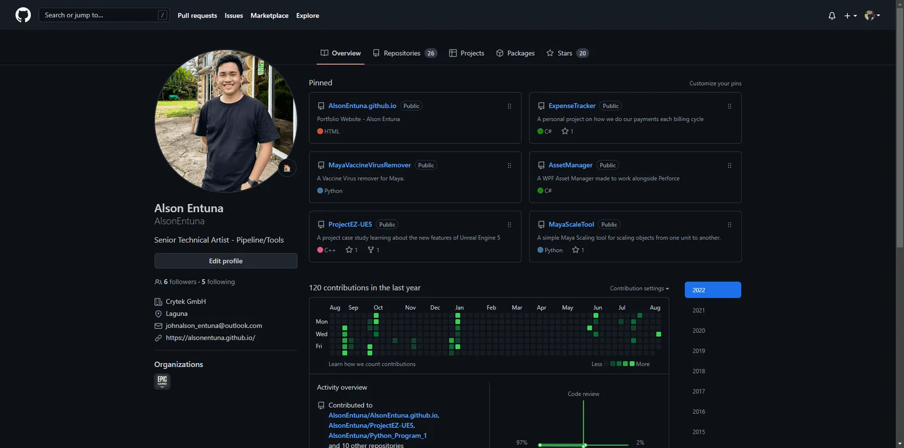
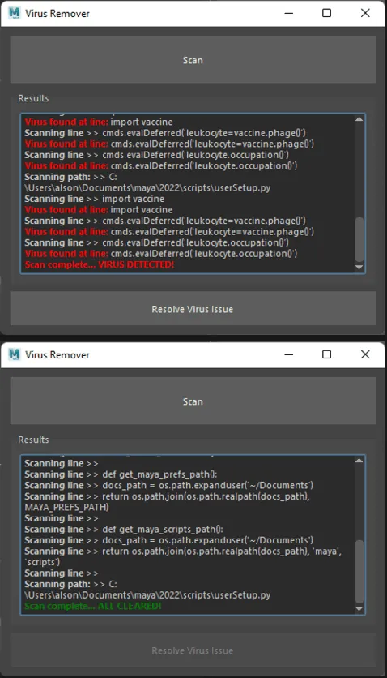
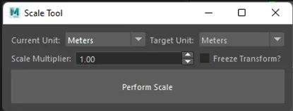

Tools
Compilation of the personal tools and projects that I've been working on during my free time. Also some of the things I've worked on back at the University.

Browse and look at some of the projects I've been making during my free time.
Compilation of the personal tools and projects that I've been working on during my free time. Also some of the things I've worked on back at the University.
Although not everything is here, I still add them in GitHub and link them to my Visual Studio Azure Repositories.
Currently working on some libraries that I'll be making to make my life easier and maybe yours to in the future.

A tool that will remove the system virus (Vaccine virus) from your maya installation preferences.
